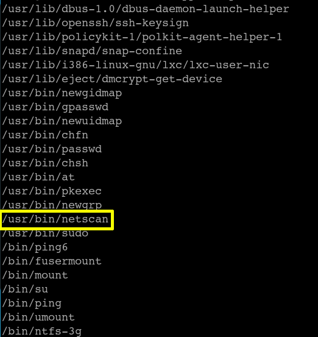
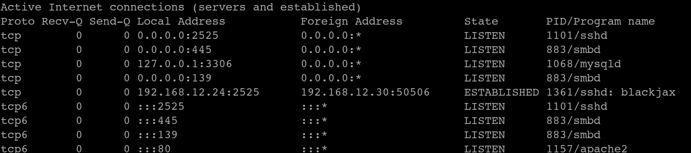

Now, in order to open our second flag, let's go to authorization upgrade. First of all, let's see if there are some super user privileges in the system.
$ find/ -type f -perm -u=s 2>/dev/null
Output: 
The paths you see above are super user authorized files. We will do the authorization upgrade process here via netscan. Those who want to see the super user privilege can go to “/usr/bin” folder and write "ls -al | grep nets" at the command line. You will see the -rwsr-xr-x authorization table.
Let's see if “/usr/bin /netscan” really works or not.
$ /usr/bin/netscan
Output: 
Yes, it is really a super user authorized tool. Try something else and you will receive a permission error. So we are going to rise the authority this way. The tools that we can run with restricted authority account will make us root authorized.